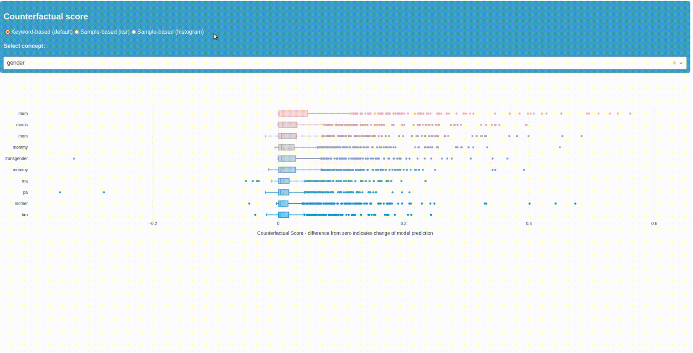
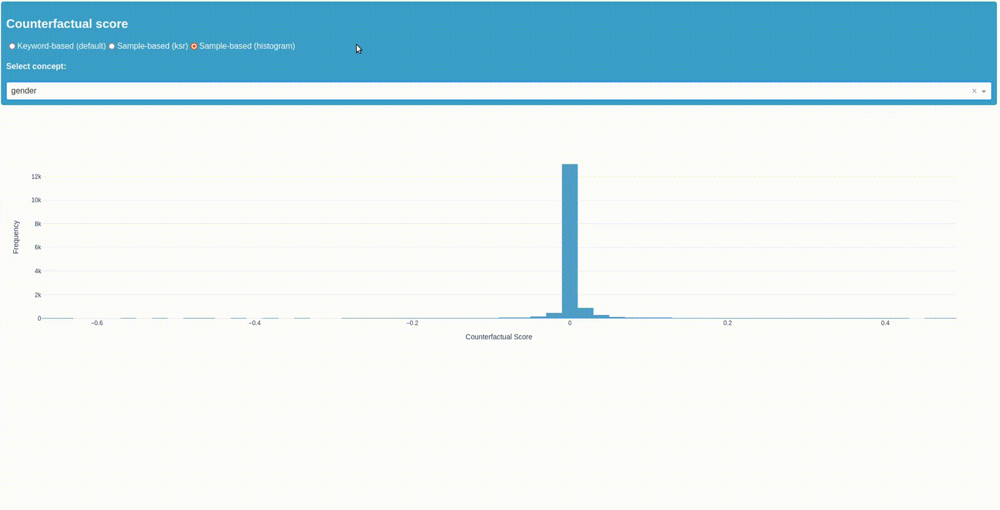

Tutorial: How to identify bias in hate speech detection
In this notebook you will see how to test a model with our Biaslyze tool in order to inspect it on hints for possible bias. Biaslyze uses counterfactual token fairness scores to evaluate the significance of concepts and attributes sensible to discrimination within the models decisions. To show you how Biaslyze works we use data from a Kaggle challenge and build a model that classifies texts from online comments as toxic or not toxic. The data consists of instances of 226235 online comments. You can get the data on the kaggle site.
Data source: https://www.kaggle.com/c/jigsaw-toxic-comment-classification-challenge
Installation
First install the Biaslyze python package using:
import numpy as np
import pandas as pd
from sklearn.feature_extraction.text import TfidfVectorizer
from sklearn.linear_model import LogisticRegression
from sklearn.pipeline import make_pipeline
Load and prepare data
| id | comment_text | toxic | severe_toxic | obscene | threat | insult | identity_hate | |
|---|---|---|---|---|---|---|---|---|
| 0 | 0000997932d777bf | Explanation\nWhy the edits made under my usern... | 0 | 0 | 0 | 0 | 0 | 0 |
| 1 | 000103f0d9cfb60f | D'aww! He matches this background colour I'm s... | 0 | 0 | 0 | 0 | 0 | 0 |
| 2 | 000113f07ec002fd | Hey man, I'm really not trying to edit war. It... | 0 | 0 | 0 | 0 | 0 | 0 |
| 3 | 0001b41b1c6bb37e | "\nMore\nI can't make any real suggestions on ... | 0 | 0 | 0 | 0 | 0 | 0 |
| 4 | 0001d958c54c6e35 | You, sir, are my hero. Any chance you remember... | 0 | 0 | 0 | 0 | 0 | 0 |
Now make the classification problem binary:
Apart from the descriptive multi-label toxicity labels, there is another target column with a binary class signifying if a comment text is toxic or non-toxic.
df["target"] = df[["toxic", "severe_toxic", "obscene", "threat", "insult", "identity_hate"]].sum(axis=1) > 0
Train a BoW-model
clf = make_pipeline(TfidfVectorizer(min_df=10, max_features=30000, stop_words="english"), LogisticRegression(C=10))
Pipeline(steps=[('tfidfvectorizer',
TfidfVectorizer(max_features=30000, min_df=10,
stop_words='english')),
('logisticregression', LogisticRegression(C=10))])In a Jupyter environment, please rerun this cell to show the HTML representation or trust the notebook. On GitHub, the HTML representation is unable to render, please try loading this page with nbviewer.org.
Pipeline(steps=[('tfidfvectorizer',
TfidfVectorizer(max_features=30000, min_df=10,
stop_words='english')),
('logisticregression', LogisticRegression(C=10))])TfidfVectorizer(max_features=30000, min_df=10, stop_words='english')
LogisticRegression(C=10)
Counterfactual token based bias detection
Now that we have a model to test, lets evaluate it with the Biaslyze tool and test the sensible concepts for possible bias. Biaslyze takes keywords representing sensitive concepts and perturbs them with the other keywords from the same concept to evaluate its significance for the models prediction.
counterfactual_detection_results = bias_detector.process(
texts=df.comment_text.sample(10000, random_state=42),
labels=df.target.tolist(),
predict_func=clf.predict_proba,
concepts_to_consider=["religion", "gender"],
max_counterfactual_samples=None,
)
2023-05-26 17:12:14.547 | INFO | biaslyze.concept_detectors:detect:35 - Started keyword-based concept detection on 10000 texts...
100%|█████████████████████████████████████████████████████████████████████████████████████████████████████████████████████████████████████████████████████████████████████████████| 10000/10000 [00:02<00:00, 4097.15it/s]
2023-05-26 17:12:16.995 | INFO | biaslyze.concept_detectors:detect:51 - Done. Found 8997 texts with protected concepts.
2023-05-26 17:12:16.996 | INFO | biaslyze.bias_detectors.counterfactual_biasdetector:process:116 - Processing concept religion...
100%|████████████████████████████████████████████████████████████████████████████████████████████████████████████████████████████████████████████████████████████████████████████████| 8997/8997 [00:58<00:00, 152.90it/s]
2023-05-26 17:13:15.845 | INFO | biaslyze.bias_detectors.counterfactual_biasdetector:_extract_counterfactual_concept_samples:219 - Extracted 6118 counterfactual sample texts for concept religion from 233 original texts.
100%|█████████████████████████████████████████████████████████████████████████████████████████████████████████████████████████████████████████████████████████████████████████████████████| 19/19 [00:02<00:00, 9.17it/s]
2023-05-26 17:13:18.035 | INFO | biaslyze.bias_detectors.counterfactual_biasdetector:process:163 - DONE
2023-05-26 17:13:18.039 | INFO | biaslyze.bias_detectors.counterfactual_biasdetector:process:116 - Processing concept gender...
100%|█████████████████████████████████████████████████████████████████████████████████████████████████████████████████████████████████████████████████████████████████████████████████| 8997/8997 [03:02<00:00, 49.23it/s]
2023-05-26 17:16:20.800 | INFO | biaslyze.bias_detectors.counterfactual_biasdetector:_extract_counterfactual_concept_samples:219 - Extracted 485109 counterfactual sample texts for concept gender from 3260 original texts.
100%|█████████████████████████████████████████████████████████████████████████████████████████████████████████████████████████████████████████████████████████████████████████████████████| 81/81 [02:26<00:00, 1.81s/it]
2023-05-26 17:18:48.999 | INFO | biaslyze.bias_detectors.counterfactual_biasdetector:process:163 - DONE
Not every Keyword has an effect.
You can get a list like below showing you the keywords of a concept that have no effect or are not in the vocabulary of the model. In this case the list refers to "gender". Reviewing the omitted keywords gives you an idea of a concepts scope and the sample composition.
['hers', 'herself', 'grandmothers', 'grandmas', 'sista', 'sistas', 'him', 'his', 'himself', 'daddies', 'grandfathers', 'grandpa', 'grandpas', 'them', 'themselves']
Lets look at some results in our Dashboard
To display the results as a dashboard with different plots just run the next cell.
See the gifs below for a short demo of the dashboard.
Counterfactual Score
The first plot shows you the top \(10\) keywords found within the concept "gender" and "religion" according to the difference resulting from the replacement of counterfactuals with that keyword. The counterfactual score is defined as the difference between the predicted probability score for the counterfactual text and the predicted probability score for the original text.
Therefore the further a samples score is from zero, the greater the change in the model's decision on whether a comment is toxic or non-toxic when it is replaced by that keyword. In this case the positive class (1) is "toxic" and the negative class (-1) is "non-toxic". As you can see in the concept "gender" replacing any other gender keyword with the word "mum" makes the samples classification more likely to be "toxic".
Key-sample replacement score (ksr-score)
The second score in the dashboard looks at how the toxicity-probability changes for all samples with a certain keyword (y-axis) when it is replaced by the counterfactuals from its corresponding concept. This gives you a better look at the representation of a certain keyword within the samples. Once again looking at the keyword "mum" we can see that when it is replaced by counterfactuals the model will less likely predict the sample comment to be toxic. Seeing that many keywords representing females have a strong impact on the models toxicity-prediction we can now ask whether the model might be biased in this way and look into it further, potentially mitigating at some point.

Looking into the samples
The third plot shows you the samples from concept "gender" and their ksr-score as a histogram. By klicking on a bar you can see the samples with their score, the original and replaced keyword, as well as the relevant sample section. This should give you the possibility to further explore the samples, the keywords surrounding syntax and use within your data.
